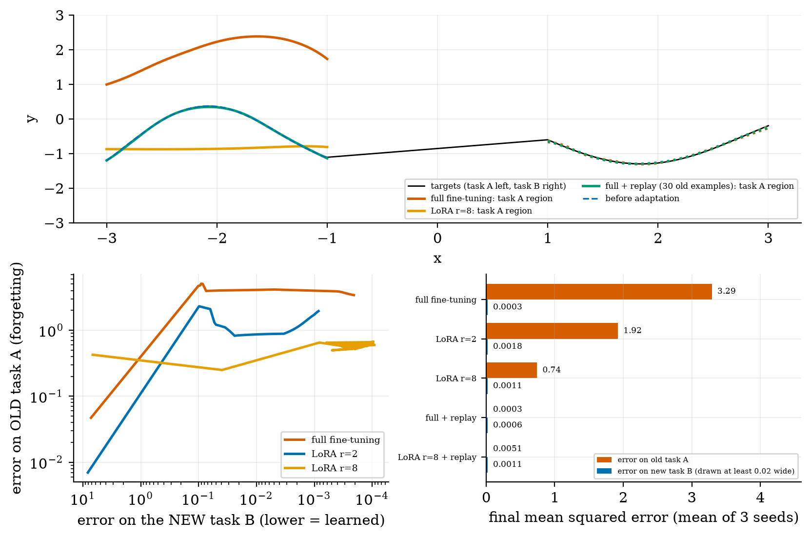
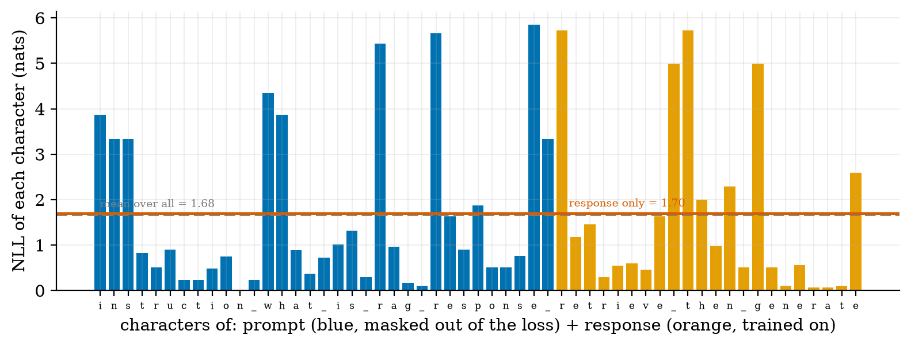
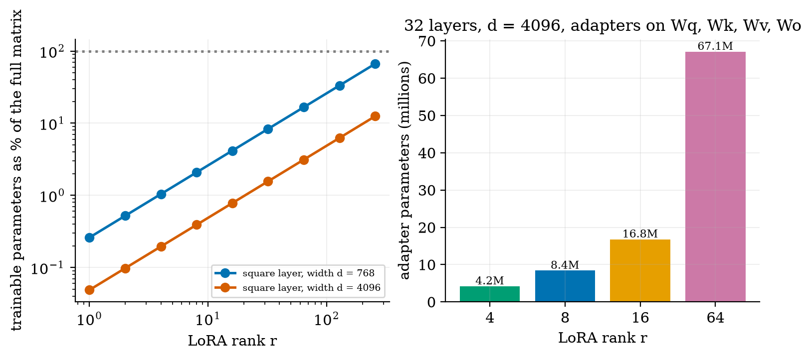
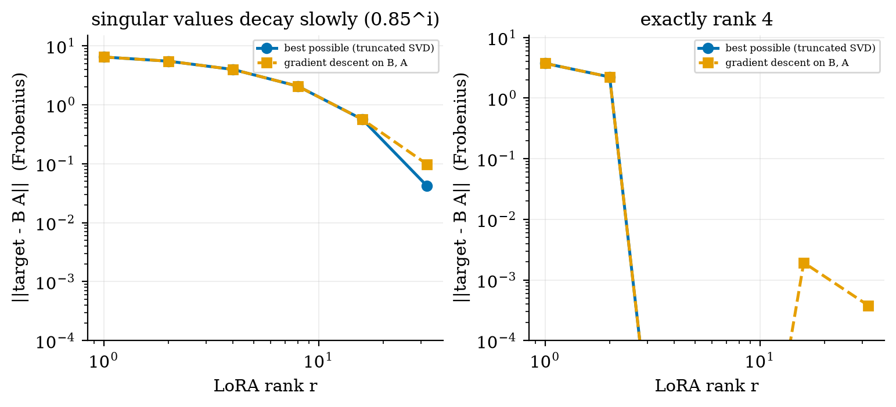
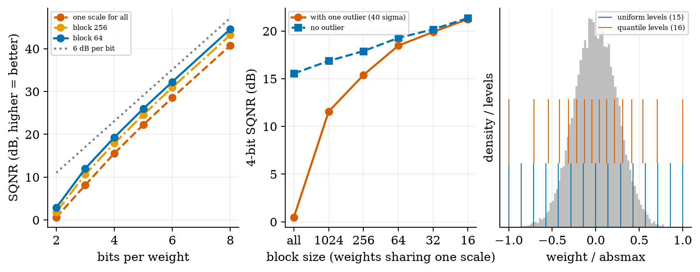
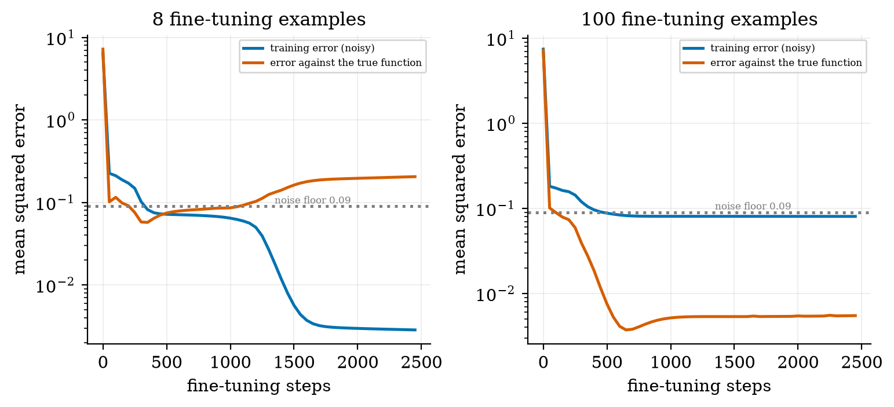

choose between prompting, retrieval and fine-tuning and say what each can and cannot change;
prepare SFT data: format, loss masking, validation, de-duplication and a leak-free split;
derive LoRA, count its parameters, and explain why a low-rank update can be enough;
explain quantization (uniform, block-wise, quantile), the 6 dB-per-bit rule, and how QLoRA uses it;
demonstrate and measure catastrophic forgetting and overfitting on small data, and say which fixes worked.
The big picture
Prompting and retrieval change the input. Fine-tuning changes the weights: good for behaviour, format and skills, but it can damage what the model already knew.
LoRA in one line. Freeze the model and learn two thin matrices per layer: W = W0 + (α/r)·B·A. With d = 4096 and r = 8 that is 0.39% of the numbers in each matrix, and the adapter can be merged back for serving with no extra delay.
Quantization in one line. Round weights to a few levels. Each extra bit buys about 6 dB of quality; one huge weight ruins a whole tensor unless weights are scaled in small blocks.
Forgetting is real and measurable. In a small network, full fine-tuning on a new task raised the error on the old task from 0.00005 to 3.3. LoRA rank 8 forgot less (0.74) but rank 2 was erratic across learning rates. Only replay (mixing in 30 old examples) fixed it in every run (error 0.0003).
Everything here was measured on tiny NumPy networks (mechanisms, not LLM benchmarks). The real LoRA practical is a Colab notebook that was written but not executed while authoring.
Key equations
LoRA: the update is a product of two thin matrices; it starts at zero.
LoRA gradients (G = gradient of the full weight, s = α/r). At start B = 0, so only B moves first.
Eckart–Young: the best rank-r approximation error.
Quantization quality: +6 dB per extra bit; a = largest weight in the block, σ = typical size.
SFT loss on response tokens R only (the prompt is masked).
Figures

Forgetting in a small network: full fine-tuning learns the new task but loses the old one; LoRA forgets less (rank 8) but is erratic (rank 2); replay fixes it.

Per-character loss of a prompt+response string: the prompt (blue) is masked out of the SFT loss, the response (orange) is trained on.

LoRA’s share of a matrix is exactly 2r/d: 0.39% at d = 4096, r = 8.

Best rank-r approximation (blue) and what gradient descent on B, A finds (orange): low rank is enough when the needed update is low rank.

Quantization: about 6 dB per bit, block-wise scales rescue a tensor with an outlier, and a quantile code beats uniform steps on Gaussian weights.

Fine-tuning on 8 examples fits the noise (training error far below the noise floor) and ends 3.6 times worse than its best; 100 examples behave.
Try it in the playground
Each link opens the widget with good starting settings. Every option has a plain-English label and a one-line help text.
LoRA calculator
See the adapter size and its share of the model for any width, depth, rank and choice of matrices.
For the real practical — fine-tune a small open model with LoRA — open the Colab notebook. It was written but not executed while authoring; the model exists on the Hugging Face hub, but the attention module names in the notebook are assumed (the notebook prints them so you can check).
An honest note. The comparison of LoRA and full fine-tuning used 3 seeds and a 4,353-parameter network. The direction (rank 8 forgets less) matches a published finding on large models, but rank 2 was erratic, so do not generalise from this toy.
Self-check
Answer in your head first, then click to reveal.
When is retrieval better than fine-tuning, and when the other way round?
Retrieval for facts that are large, private or change often; fine-tuning for a consistent behaviour, format or skill.
Why is the SFT loss masked to the response tokens?
The prompt is context, not the target; unmasked, 60% of the training signal in the example would go to predicting the user’s text.
How many numbers does a rank-8 LoRA adapter add to one 4096 × 4096 matrix?
8 × (4096 + 4096) = 65,536, which is 0.39% of 16,777,216.
How much quality does one extra bit buy in uniform quantization?
About 6 dB (measured 6–7 dB).
Why initialise B = 0 and A random, instead of both zero?
The adapted model then starts identical to the base; and with both zero neither could move, because each gradient contains the other matrix.
Which fix for forgetting worked in every run here?
Replay: mixing a few old examples into the new training data.